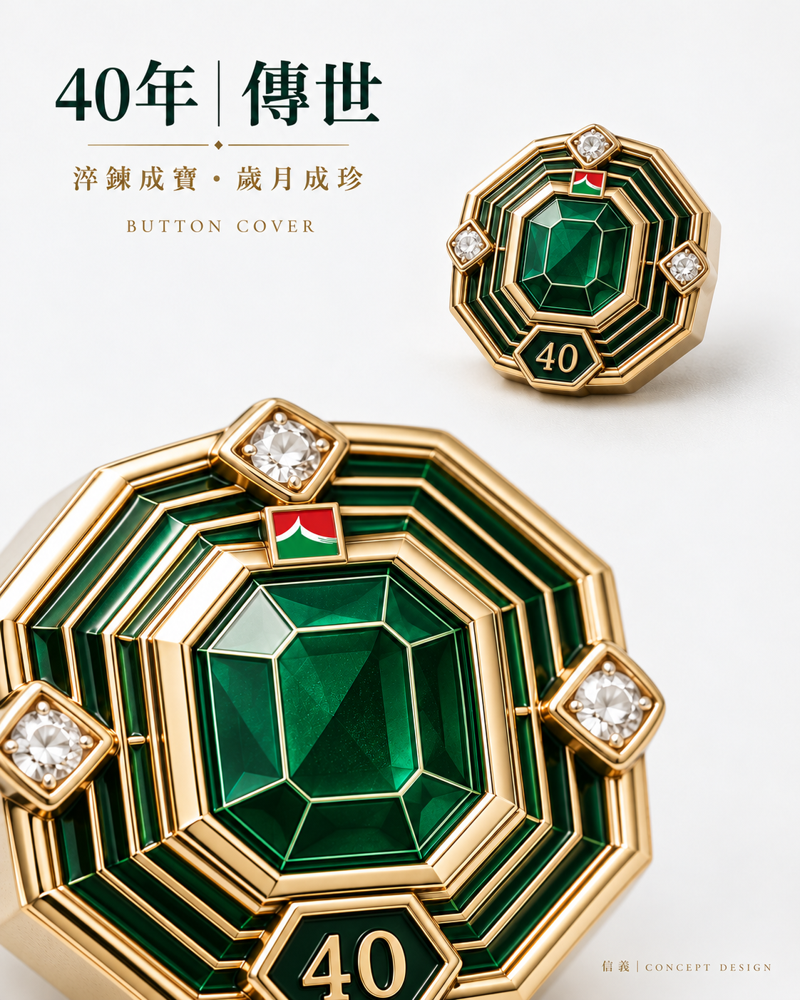
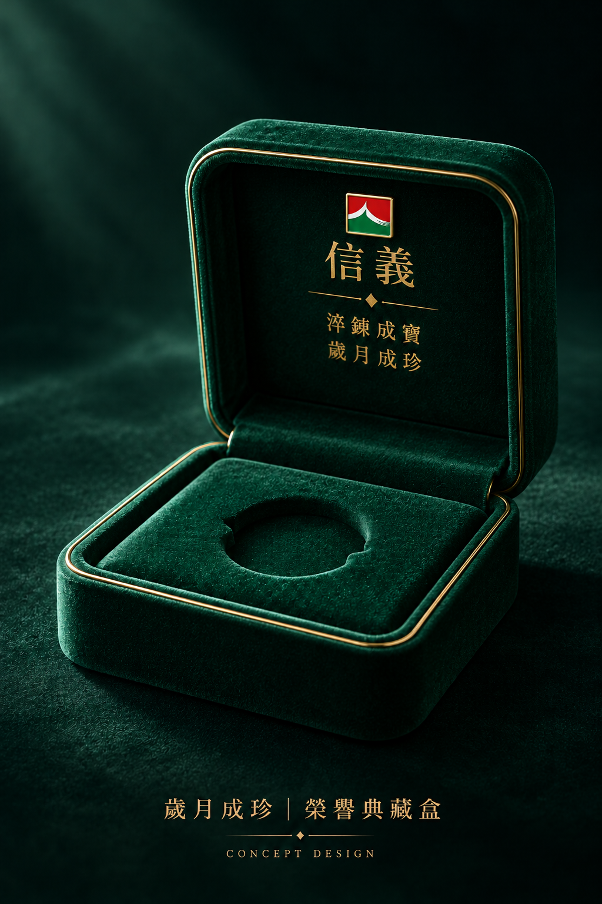
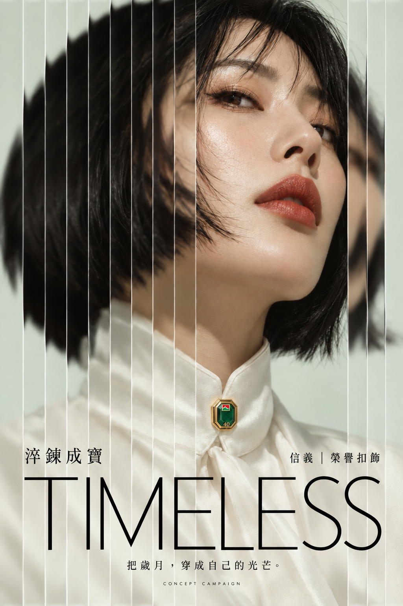
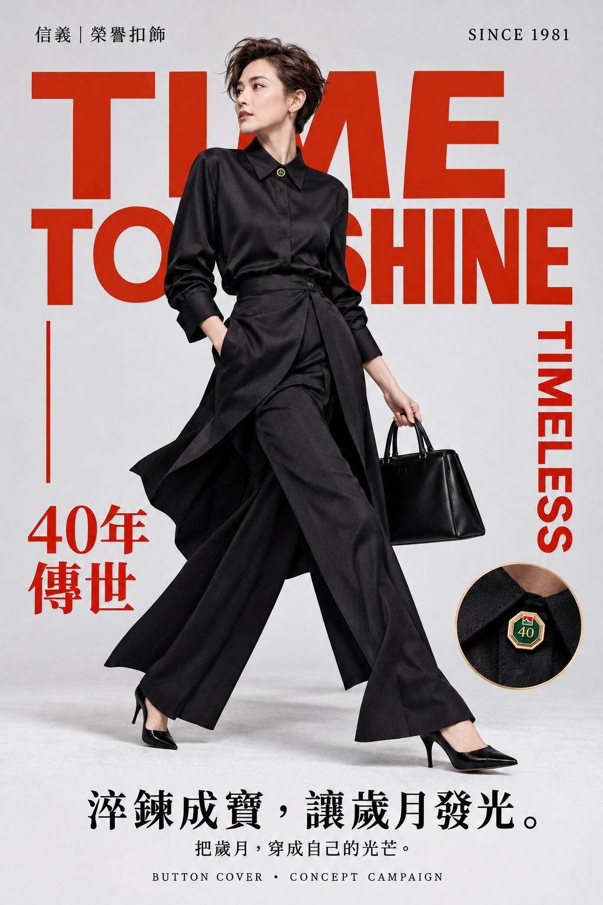
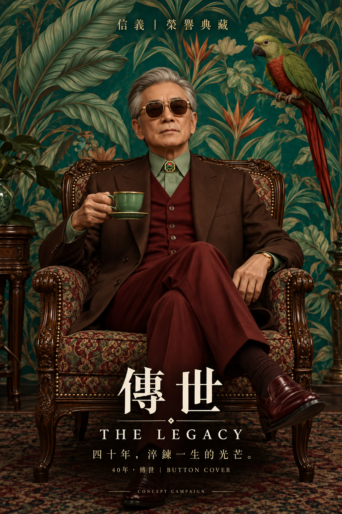

初心，始終相伴
將榮譽化為襯衫扣飾，讓每天整裝出發的片刻，成為重溫初心的小儀式。
SINCE 1981 / SERVICE HONORS CONCEPT
把每一段年資，化為值得珍藏的光芒。
從蘊藏的潛力，到傳承的價值，
八個里程碑，記錄一路實踐信義的你。

40 YEARS / 傳世01 / THE IDEA
年資，讓一個人擁有不同的光芒。以珠寶誕生為隱喻，將學習、歷練、承擔與傳承，化為可以佩戴的榮譽。
綠色是初心，金色線條記錄淬鍊的軌跡。當付出被看見，這枚扣飾便成為公司與同仁彼此珍惜的見證。
個年資里程碑
一份持續成長的承諾
02 / THE JOURNEY
點選年份，探索設計與故事。
每一份付出，都值得被鄭重記錄。
03 / MADE TO MEAN MORE
將榮譽化為襯衫扣飾，讓每天整裝出發的片刻，成為重溫初心的小儀式。
以個人的真實貢獻故事搭配授章，讓被記住的，既有歲月，也有歲月中的人。
從成就自己，走向成就他人。資深同仁的分享，讓信義精神在下一代延續。

04 / THE PRESENTATION
深綠絨布、細金邊與專屬位置，讓開盒成為一個值得記住的瞬間。
授贈時，念出一段屬於受贈者的故事，再將扣飾交到他手中。榮譽因為這份理解，而有了重量。
謝謝你，將珍貴的歲月，查看典藏盒完整設計 ↗
化為我們共同的珍藏。
05 / WORN WITH PRIDE
三種氣質，一份值得日常佩戴的榮譽。
點選海報，查看完整形象設計。

白色立領與綠金扣飾相映，在細緻的光影之間，讓一份長久的堅持貼近日常。

俐落黑色穿搭與鮮明字體，讓小巧的榮譽扣飾，成為整裝出發時的自信細節。

深綠、棕色與酒紅層次，呈現歷練後的從容。四十年的價值，在舉手投足間延續。
40年・傳世｜佩戴與形象概念展示
A SHARED LEGACY